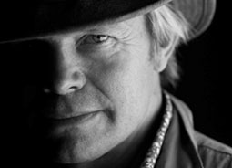
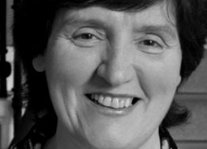

-

Paul Murton
Paul is the writer and presenter of "Grand Tours of Scotland", made for BBC Scotland by Timeline Films as well as the presenter of "The Mayan Apocalypse 2012" for Channel 4. Previously he presented three series of the highly successful "Scotland’s Clans" for the BBC.
Paul is a graduate of the National Film and Television School and an award winning film maker with over 20 years of experience across range of genres, including drama and documentary.
Contact Paul
-
Kathryn Ross
Kathryn has produced and directed a range of highly rated programmes for the BBC, Channel 4 and the Discovery Channel. She is Series Producer of "Grand Tours of Scotland," director of Episode 3 of "Dreaming the Impossible:Unbuilt Britain" and Exec producer of "Power to the Pococks" and "The Mayan Apocalypse 2012". Previous credits include Crimes That Shook the World, Tales From Europe and Scotland's Clans.
Contact Kathryn
-

Arlene Jeffrey
Arlene is the Production Executive across all of Timeline’s output including the highly successful BBC4 series “Dreaming the Impossible:Unbuilt Britain.
A former Managing Director of Mentorn Midlands, Arlene has a proven track record over many years in the media industry.
Contact Arlene